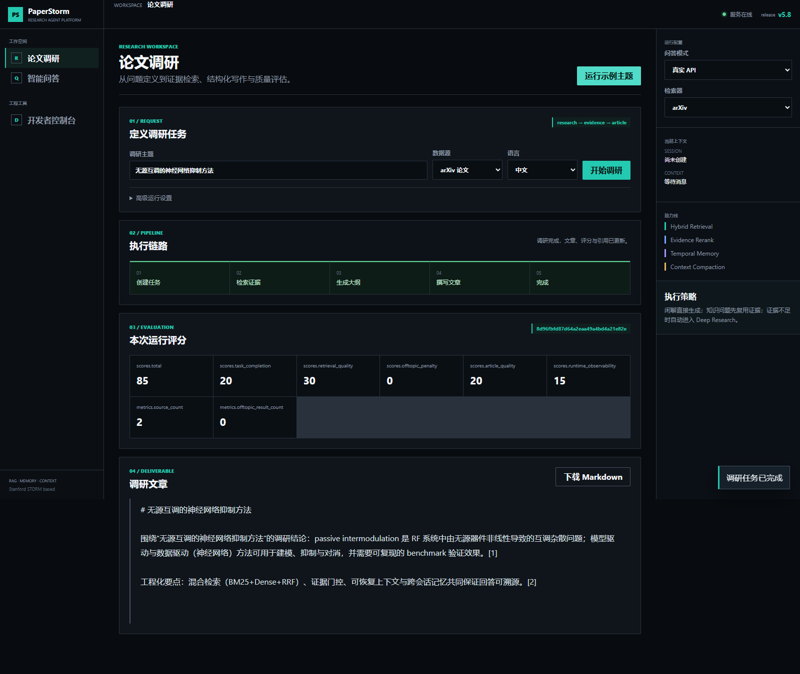
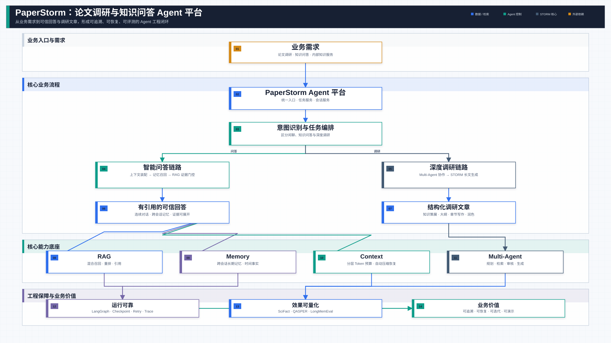

SYSTEM BRIEF
从 STORM 研究流程扩展为可恢复、可治理的知识型 Agent Harness。
将论文检索、Multi-Agent 调研、知识库问答和证据引用整合为两条业务链路；以统一运行时承载检查点、重试、幂等、SSE Trace 与 Langfuse 可观测性。
- RetrievalBM25 + Dense + RRF 混合召回，可选 CrossEncoder 重排与证据门控。
- MemorySQLite 持久化、时间有效事实、跨会话混合检索与冲突治理。
- Context分层 Token 预算、相关性过滤、摘要压缩与可恢复上下文。
- RuntimeLangGraph 状态图、Checkpoint、失败恢复、工具契约与实时 Trace。
QASPER0.5441Answer F1
SciFact0.7001nDCG@10 · Hybrid + Rerank
LongMemEval-S0.8003Recall@5
Context Evidence0.999847Retention · diagnostic
公开数据集与诊断实验口径，详细配置和可复现实验命令见项目 README。
查看系统架构

PythonDSPyLangGraphFastAPISQLiteLangfuseSSE